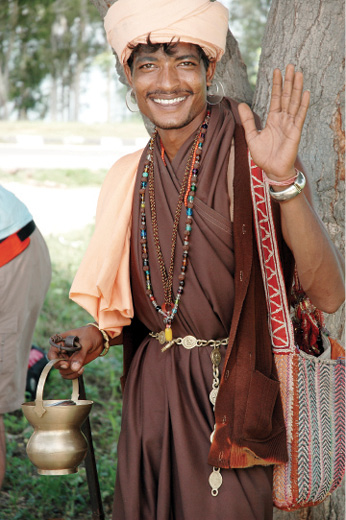

5 AĞUSTOS
Fotoğrafları eleme sırası İnci’de. Bellekte daha fazla boş yer kazanmak için her gün çektiğimiz fotoğraflardan büyük bölümünü siliyoruz. İnci fotoğraflarla uğraşırken bir tanesini bana gösteriyor. “Alaaddin’in Cini’ne bak” deyince kimden bahsettiğini hemen anlıyorum. Kalabalıktan dolayı çok poz çekmemişiz. Ama elimizdekiler harika.
Alaaddin, artık sıradan olan lastik patlaklarımızdan biri sırasında, etrafımıza birikiveren kalabalık arasında, olağanüstü parlak ten rengi, başında kalpağı, elinde derviş kâsesi, tespihi, uzun cüppesi ve bezden çantasıyla yanımızda bitiverdi birden.
Bütün mal varlığı yanındaki ufacık çantasında olan bu genç derviş gerçekten çok yakışıklı görünüyor. Derin bakan etkileyici gözleri var.
Bıyıkları çevresindeki hafif sakalı, sakin ve anlamlı bakan iri gözleri ve kıyafetleriyle sanki bir masaldan fırlamış gibi. İyi dileklerde bulunuyor. Patlak lastiklerimiz için üzüntülerini bildiriyor. Biraz bahşiş atıyorum bakır kâsesine. Birkaç fotoğraf daha çekiyoruz.
Şimdi bu adamın cin olduğunu farz ederek üç dilek hakkımızı kullanıyoruz.
1- İnci’yle ömür boyu birlikte olalım.
2- Hobilerimizi devam ettirecek ve geçinebilecek kadar para kazanalım.
3- Dünyaya açtığımız büyük deliği yamayabilmek için herkes bisiklet binmeye başlasın.

Hindistan, Pencap
“Dile benden ne dilersen.”